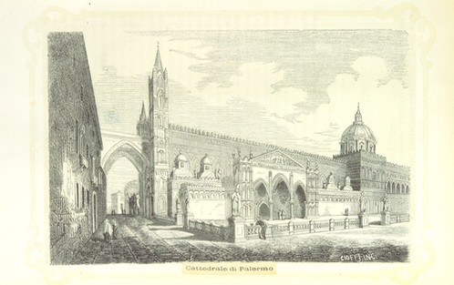

Quando lo scorso maggio – con Ciro, Gerlando, Marco, Giulio, Davide e Francesco – ho iniziato il lavoro che ha portato alla redazione de ” le linee guida sugli #OpenData della città di Palermo” avevo tantissimo entusiasmo, un po’ di conoscenza di dominio e pochissima esperienza su obiettivi di questo tipo.
Mi sentivo forte di entusiasmo e di conoscenze: in dipendenza del momento, le usavo ora come spade, ora come scudi. Mi dovevo prendere cura di un lavoro ”mio”, che mi sembrava di valore per la società.
Oggi, alla luce dell’esperienza fatta, mi sembra inutile brandeggiare qualsiasi arnese e quel lavoro è della comunità, non mi appartiene più.
Questa bella evoluzione si deve essenzialmente a un’intuizione: avere compreso il valore che una licenza fornisce all’opera a cui viene applicata.
Ai più sembrerà una concetto scontato, e confesso che anche io avrei pensato allo stesso modo prima di aver vissuto questa vicenda. Soprattutto per le licenze che danno maggiore “libertà”:
La persona che ha associato un’opera con questo atto ha dedicato l’opera al pubblico dominio attraverso la rinuncia a tutti i suoi diritti al lavoro in tutto il mondo dalle leggi sul copyright, inclusi tutti i diritti connessi e vicini, nei limiti consentiti dalla legge (licenza CC0).
Associare una licenza di questo tipo ad un proprio elaborato lo rende evidentemente “indipendente”, a disposizione di chiunque lo voglia utilizzare, nelle maniere più inaspettate e geniali.
Ma anche il semplice fatto che ad un oggetto sia associata una licenza chiaramente definita è parte del valore di cui sopra. Proprio quest’ultima cosa, l’ho imparata lavorando su queste linee guida.
Quando abbiamo iniziato a scriverle siamo partiti dai contenuti, e durante tutto il processo di elaborazione non abbiamo mai pensato ai diritti sul documento. Se non nei termini classici: ma sto trasgredendo qualche norma? Se copio questo testo ci denunciano? C’è una multa da pagare?
Ma il bello di una licenza è ciò che ti abilita a fare, non quello che ti vieta: ho apprezzato questo concetto e l’ho fatto mio recentemente. A fine dicembre infatti Francesco Piero Paolicelli mi scrive un’email e mi chiede di inviargli copia in formato modificabile delle linee guida di Palermo, perché sul web c’era soltanto la meno “comoda” e accessibile copia in formato PDF. Allora, visto che il documento era mio, di Ciro, Gerlando, Marco, Giulio, Davide e Francesco, dovevo prima condividere con tutti loro la scelta e all’unanimità. Scrivo loro un’email e nasce uno scambio da cui – non senza sane incomprensioni evolute in soluzioni – ci rendiamo conto che il documento non era veramente libero e che stava perdendo il valore (quello che sia) che aveva.
Per liberarlo, dargli superpoteri e farlo diventare virale è bastato applicargli una licenza. Le “linee guida sugli #OpenData della città di Palermo” sono state pubblicate quindi in CC BY-SA e tutti sono liberi di:
- Condividere - riprodurre, distribuire, comunicare al pubblico, esporre in pubblico, rappresentare, eseguire e recitare questo materiale con qualsiasi mezzo e formato
- Modificare - remixare, trasformare il materiale e basarti su di esso per le tue opere per qualsiasi fine, anche commerciale.
Ai seguenti termini:
- Attribuzione - Si deve attribuire adeguatamente la paternità sul materiale, fornire un link alla licenza e indicare se sono state effettuate modifiche. E’ possibile realizzare questi termini in qualsiasi maniera ragionevolmente possibile, ma non in modo tale da suggerire che il licenziante avalli te o il modo in cui usi il materiale.
- Stessa Licenza - Se si remixa, trasforma il materiale o ci si basi su di esso, bisogna distribuirne i contributi con la stessa licenza del materiale originario.
E’ bastato questo per renderlo un documento utile, abilitante e virale e sono felice che le linee guida sugli Open Data approvate in queste ore dal Comune di Matera siano basate sull’entusiasmo, sulla conoscenza e sull’esperienza che hanno portato alla pubblicazione del documento della città di Palermo, che trovate qui http://bit.ly/opendatacomune.
La licenza applicata non è la migliore, ma alcuni testi utilizzati per la sua stesura sono pubblicati in CC BY-SA e quindi è stato necessario imporre la stessa licenza.
E’ la prima versione del documento, e difatti gli abbiamo assegnato un numero di release e scelto un nome. Per il nome abbiamo deciso di iniziare dalla lettera “a” e di usare una parola che “localizzi” un po’ il documento (è un’idea di Gerlando). E’ la prima release, e quindi dovremo prendercene cura anche in futuro, migliorarla, snellirla, uniformarla nello stile, ristrutturarla e completarla.
Migliorarla ad esempio proprio in termini di licenza e passare da CC BY-SA a CC BY, in modo che sia ancora più riutilizzabile. Oppure renderla neutra rispetto ai Comuni di Italia, e rimuovere i riferimenti a Palermo.
Il documento è aperto ai commenti, così che si possano costruire le versioni successive in modo partecipato, e raccogliere correzioni, note e integrazioni di chicchessia.
E’ stata ed è una bella esperienza e mi sembra utile condividerla. Il documento pubblicato ora in CC BY-SA non vuole essere però una “terra di mezzo” tra l’esigenza di chi deve redarre delle linee guida sugli Open Data e la loro realizzazione, ma la definizione di una frontiera da superare.
NdR: la bella immagine in testa è una delle tante di pubblico dominio della British Library.


{kind=link}
{kind=link}